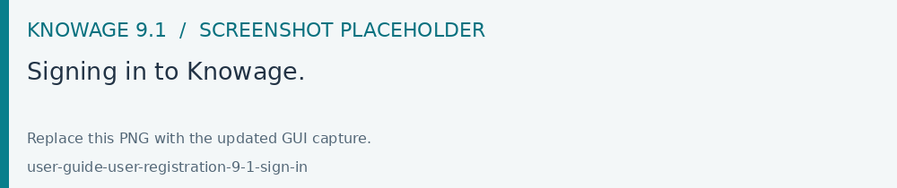

Signing in and registering
Open the Knowage URL supplied by your organization. Sign in with the assigned credentials, or follow the configured single sign-on flow.
When multi-factor authentication is enabled for your account, complete the additional verification shown after entering your credentials. See Multi Factor Authentication for the enrollment procedure.

Fig. 7 Signing in to Knowage.
Registering a new account
The Signup action appears when the administrator enables
SPAGOBI.SECURITY.ACTIVE_SIGNUP_FUNCTIONALITY.
Choose Signup on the login page.
Enter your details, user name and a password that satisfies the displayed requirements.
Submit the form and open the verification email.
Confirm your email address, then sign in with the new account.
If signup is unavailable or your account uses external authentication, ask your organization’s administrator to provide access.
Login problems
Use the password recovery action when it is available. With single sign-on, follow your identity provider’s recovery procedure. If repeated failed attempts lock your Knowage account, an administrator can unlock it in Users Management.